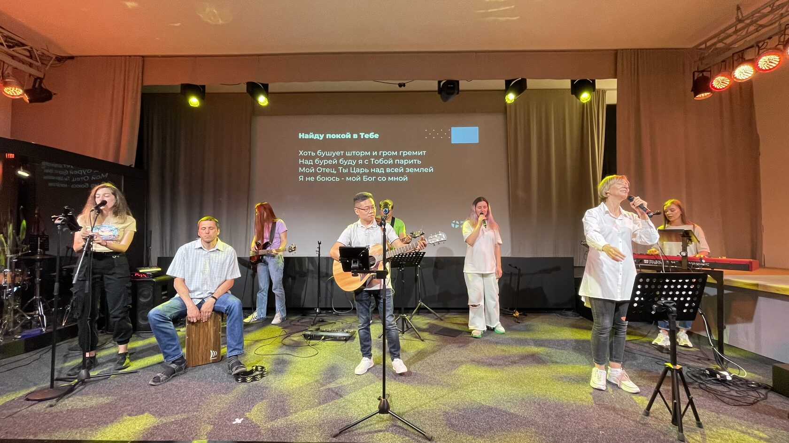
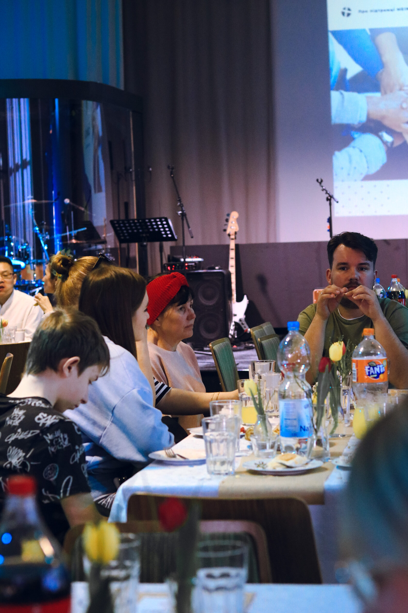
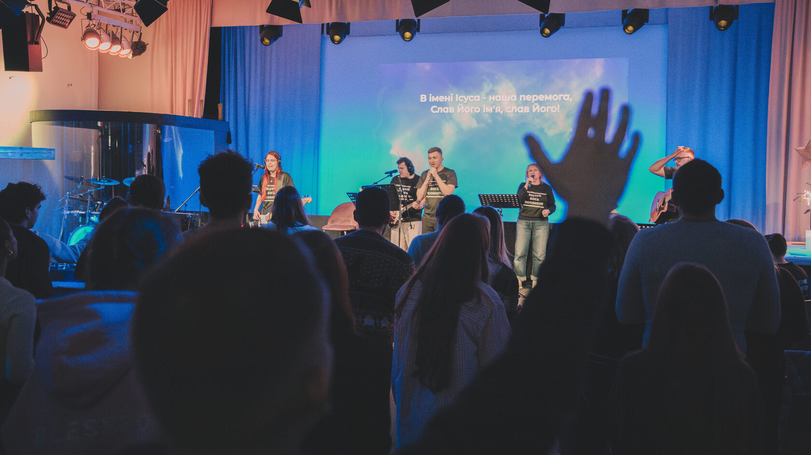
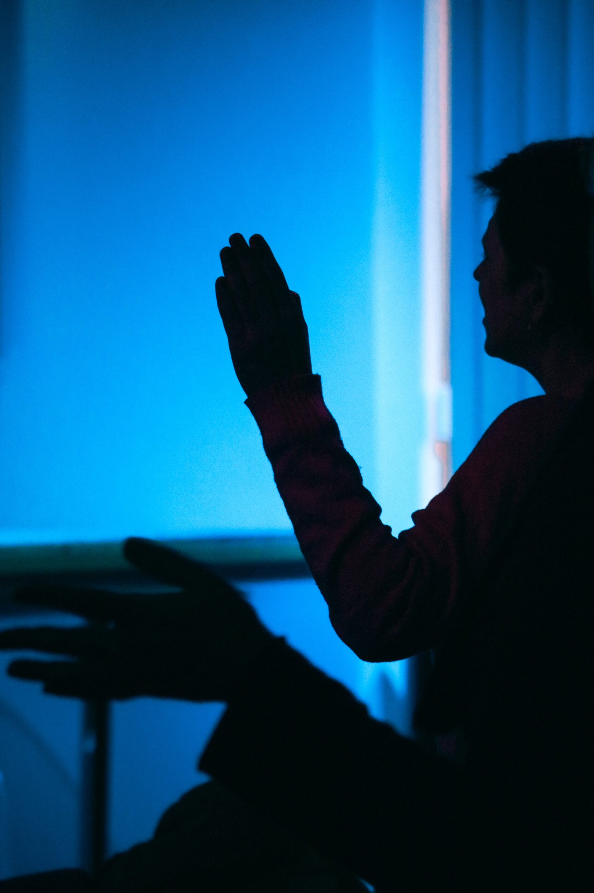
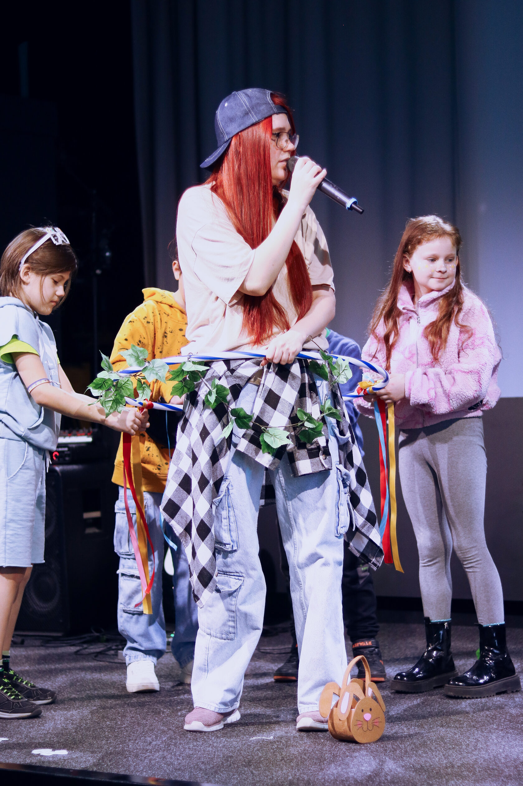

93059 Regensburg
Громада
Люди, які несуть тягарі одне одного
Тут можна знайти дружбу, підтримку, допомогу й реальний зв'язок з людьми, які проходять подібний шлях.
Відчуй Бога особисто
Українська церква у Регенсбурзі, місце де кожен пізнає Бога особисто, знаходить підтримку в еміграційних викликах та змінює світ на краще.
93059 Regensburg
Поклоніння, молитва та спілкування
Служити Йому в Регенсбурзі та людям у Баварії
Підтримка, молитва та духовний дім


Про церкву
Наша місія — прославити Бога і служити Йому в Регенсбурзі та людям, які мешкають у Баварії.
MEINE KIRCHE UA — це служіння для переселенців з України та вихідцям із колишньої СНД. Проповідуємо та спілкуємось на українській та російській мові.
Також це місце, в якому люди можуть отримати допомогу, налагодити стосунки з Богом та оновити духовну, душевну та емоційну цілісність.
Написати намЖиття церкви
Ми будуємо служіння, яке надихає на радість життя і поклоніння Богу, допомагає не залишатися наодинці та відкриває простір для зростання лідерів і служителів.

Щотижня громада збирається разом, щоб поклонятися, слухати Слово, молитися і підтримувати одне одного на новому етапі життя.
Тут можна знайти дружбу, підтримку, допомогу й реальний зв'язок з людьми, які проходять подібний шлях.

Молитва, піст та життя в силі Святого Духа є частиною ритму громади та особистого зростання.

Дитяче служіння допомагає сім'ям знайти свій дім у громаді та зростати разом у вірі.
Служіння
Заголовки, фотографії та структура цього блоку зібрані на основі архіву сайту MEINE KIRCHE UA і адаптовані під новий візуальний ритм.
Тепла спільнота підтримки, молитви, дружби та духовного зростання.
Простір для глибокої молитви, пошуку Божої волі та життя в силі Святого Духа.
Безпечне середовище, де діти пізнають Бога, дружать і ростуть у вірі.
Вперше у нас?
Якщо ти шукаєш церкву, підтримку або просто хочеш познайомитися, приходь на богослужіння щонеділі. Тут тебе зустрінуть відкрито й допоможуть зорієнтуватися.
Це духовний дім для українців у Регенсбурзі, де кожен може пізнавати Бога особисто, знаходити підтримку та рости разом із громадою.
У матеріалах архіву церква представлена як християнська протестантська громада для українців у Німеччині.
Просто приходь у неділю на Kieslgasse 8 або напиши в Telegram чи на email, якщо хочеш, щоб тебе зустріли або підказали маршрут.